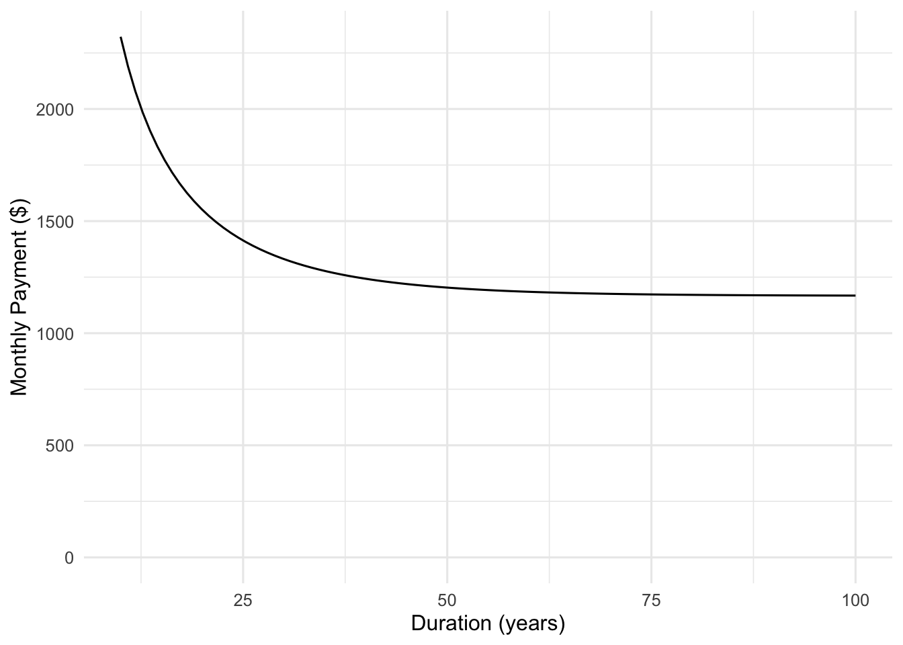
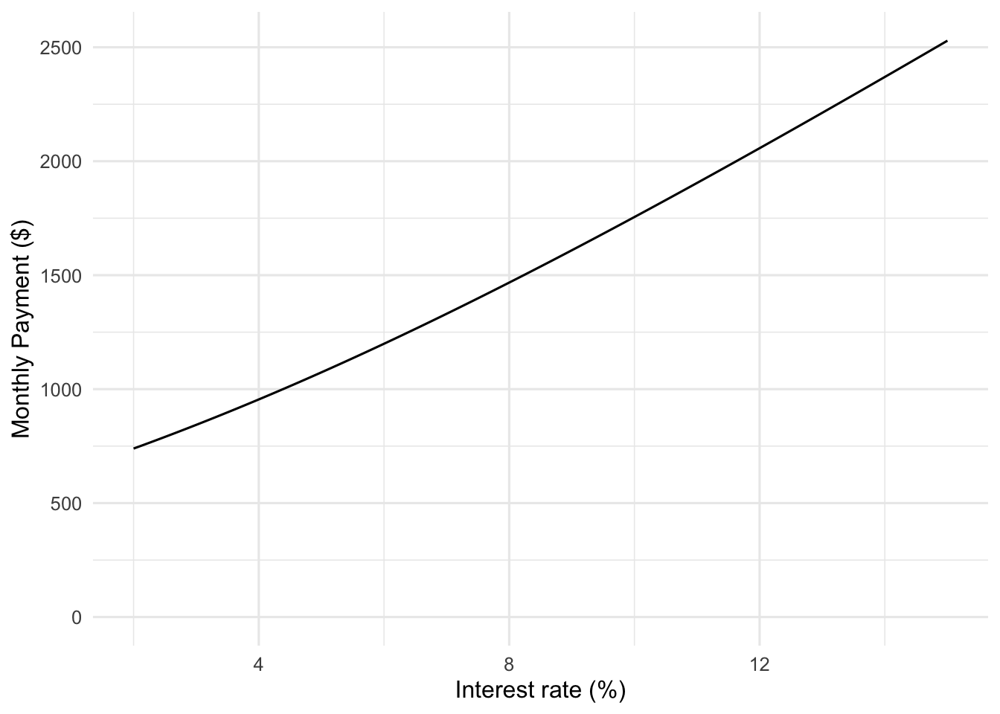

Quantitative Argumentation
Chapter 6 Reading Questions
No answers yet collected
Exercise 1 In the context of modeling systems, what is the difference between endogenous and exogenous quantities? Give an example of each from the solar panel system diagram in the chapter. Think of a different system, and identify an endogenous and exogenous quantity.
Exercise 2 The chapter discusses the distinction between understanding the steps of an algorithm in detail, and understanding enough about the algorithm to be able to operate it. What information do you need to understand in order to operate an algorithm?
Exercise 3 Consider the function monthly_payment(principal, interest_rate, years). If you wanted to find out how the monthly payment changes when you vary the loan duration, what would you do?
Exercise 4 In 2026, a proposal for reducing costs to homeowners was floated: Increasing the mortgage duration from the typical 30 years to 50 years or more will reduce the monthly payment. Figure 1 shows two graphs of the monthly_payment() function.


How can one function, monthly_payment() have two different graphs?
Which of the two panels—(a) or (b)—gives insight into the suggested long-duration policy?
Exercise 5 What’s the distinction between an “argument” and an “input”?